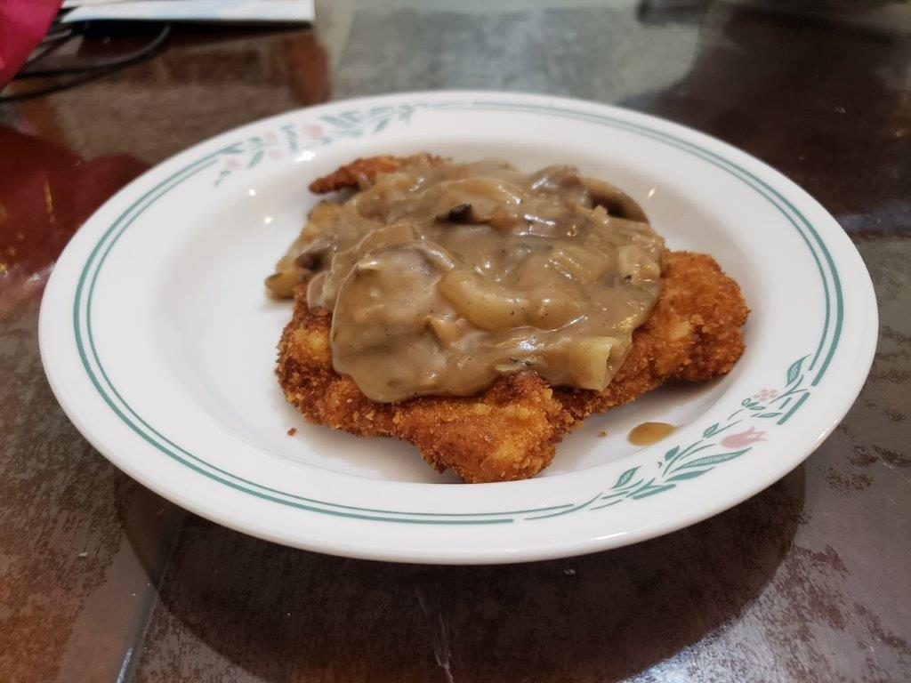

Jägerschnitzel

Ingredients:
Schnitzel:
Gravy:
- 2 tbsp Unsalted butter
- 1 Onion, sliced
- 1 clove Garlic, minced
- 16 oz Button mushrooms, sliced
- 4 tbsp Unsalted butter
- 4 tbsp Flour
- 2 cups Beef broth
- 1-2 tsp Balsamic vinegar
- 1/2 tsp Sugar
- 1/2 tsp Salt
- 1/4 tsp Dried thyme
- 1/4 tsp Black pepper
Instructions:
- In a pot or a large pan, heat the butter over medium high heat until melted. Add in the onions and cook until starting to brown. Then add the garlic and cook for another minute.
- Add the mushrooms and cook until soft and the water from the mushrooms evaporates, about 5-7 minutes.
- Add the butter and melt. Then add the flour and stir constantly for 2 minutes.
- Stir in the beef broth, vinegar, salt, sugar, thyme, and pepper. Stir until the gravy is thickened. Lower the heat to low and cover. Cook for 5-10 minutes. If the gravy is too thick, add water. If it is too thin, cook until reduced.
- Pour the gravy over the schnitzel to serve.